| Кодирование от алкоголизма | |
|---|---|
| Имплантация препарата Торпедо 6 месяцев |
4900 руб. |
| Снятие кодировки |
4900 руб. |
| Кодирование Двойной блок |
4900 руб. |
| Кодирование от алкоголизма на дому |
4900 руб. |
| Лечение алкоголизма | |
|---|---|
| Имплантация препарата Торпедо 6 месяцев |
4900 руб. |
| Снятие кодировки |
4900 руб. |
| Кодирование Двойной блок |
4900 руб. |
| Кодирование от алкоголизма на дому |
4900 руб. |
Высокое качество услуг
Конфиденциальность лечения
100% гарантия трезвости
Наша платная наркологическая клиника — это команда квалифицированных врачей, психологов и обслуживающего персонала, которые разбираются в тонкостях аддикции и правильном поведении с пациентами, имеющими зависимость. Все сотрудники клиники систематически принимают участие в семинарах, международных тренингах, которые помогают совершенствовать навыки и обучаться более эффективной работе с наркозависимостью.
Согласно МКБ-10, алкогольная зависимость является комплексом физиологических, когнитивных и поведенчески стереотипов. При их развитии употребление спиртного занимает самое важное место в жизни человека. Зачастую разница между обычным бытовым пьянством и алкоголизмом не видна до появления запоев. Вывод из запоя людей с алкогольной зависимостью, которая проявляется продолжительным употреблением, — длительный и многокомпонентный процесс, для успешного проведения которого нужна помощь специалистов. Лечение в наркологической клинике в Уфе — наиболее эффективный метод, который помогает значительно снизить риск рецидивов и может проводиться как в клинике, так и на дому.
Для вывода из запоя на дому в нашей наркологической клинике есть все необходимые лекарственные препараты и медицинское оборудование, позволяющее безопасно, эффективно и качественно устранять проявления абстинентного синдрома. После обращения в клинику наши клиенты могут воспользоваться анонимными услугами как на дому, так и в условиях стационара. Среди основных достоинств нашего центра:
Большой объем теоретических знаний и практических навыков позволяет врачам-наркологам нашей клиники оказывать специализированную помощь, безопасно и эффективно выводить пациентов из запоя. Используемые методики направлены на:
Использование современных и сертифицированных методик, которые имеют доказательную базу, позволяет за короткий срок восстанавливать работу органов, пострадавших из-за длительного запоя.
Для получения консультации врача обратитесь по телефону: ☎️ +7(961)268-26-76 наркологической клиники Похмелочная.
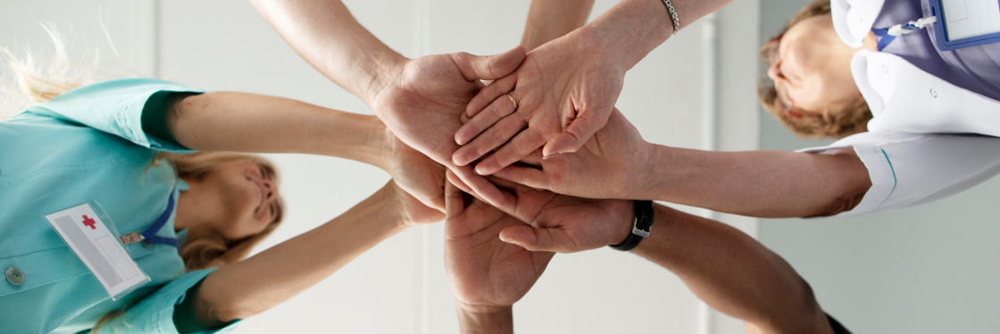
Запой - это серьезная опасность для здоровья человека. Периодические или продолжительные алкогольные потребления в больших дозах могут привести к серьезным физическим и психологическим последствиям. Алкоголь негативно влияет на печень, сердце, центральную нервную систему и другие органы, вызывая ослабление иммунитета и повышая риск заболеваний. Кроме того, запой может вызвать социальные проблемы, ухудшив отношения с близкими и нарушив профессиональную деятельность. Прежде всего, забота о здоровье должна стать главным мотиватором для отказа от алкогольных злоупотреблений.
Длительные периоды употребления алкоголя приводят к серьезным нарушениям функций печени, что может вызвать цирроз и даже рак этого органа. Болезни сердца, включая аритмию и гипертонию, часто являются результатом регулярного алкогольного потребления. Алкоголь оказывает токсическое воздействие на нервную систему, что приводит к нарушениям координации движений, проблемам с памятью и даже деменции.
Периоды алкогольной зависимости могут привести к тяжелым депрессиям, тревожности и психозам. Алкоголь вызывает нарушения химического баланса в мозгу, что отрицательно сказывается на эмоциональном и психологическом здоровье. Зависимость от алкоголя часто приводит к социальной изоляции, ухудшению отношений с близкими и потере интереса к обычным радостям жизни.
Наша наркологическая клиника предлагает пациентам вывод из запоя в стационарных условиях, и на дому который также включает в себя:
Запой — серьезное заболевание, требующее комплексного лечения. Эффективные методы вывода из запоя способны вернуть человеку нормальное функционирование организма и помочь ему начать новый этап жизни без вредных привычек.
Стационарное лечение представляет собой пребывание пациента в специализированном медицинском учреждении под постоянным наблюдением врачей. Этот метод имеет ряд преимуществ:
Вывод из запоя на дому — это альтернативный метод, позволяющий пациенту проходить лечение, не покидая своего дома. Он имеет свои преимущества:
Медикаментозная помощь играет ключевую роль в процессе вывода из запоя. Она включает в себя применение специальных препаратов, направленных на нормализацию функций организма и снятие алкогольной зависимости. Препараты для вывода из запойного состояния:
Бесплатная консультация
Подбор программы лечения
Детоксикация
Реабилитация и социализация
С помощью домашних средств вывод из запоя невозможен. Большинство эффективных лекарственных препаратов отпускаются только по рецепту врача. Поэтому если нет возможности отправить человека на стационарное лечения, круглосуточный вывод из запоя на дому с помощью профессионального нарколога — лучшая недорогая альтернатива. Сохранение полной анонимности и безопасность лечения гарантирована. К тому же, в домашних условиях человек будет чувствовать себя гораздо комфортнее. Однако у таких мероприятий есть свои недостатки:
Но в некоторых ситуациях после проведения необходимого объема обследований пациенты с нетяжелым течением абстинентного синдрома могут получать лечение на дому. Грамотная организация наркологической помощи, последовательное проведение дезинтоксикации, последующее восстановления, психотерапия и реабилитация помогут улучшить состояние человека и закрепить прогресс лечения.
Для получения консультации врача обратитесь по телефону: ☎️ +7(961)268-26-76 наркологической клиники Похмелочная.
Для эффективного процесса домашнего вывода из запоя необходимо правильное техническое оборудование. Оно включает в себя:
Кроме того, нарколог, осуществляя домашний вывод из запоя, берет с собой необходимые медикаменты и оборудование для проведения процедур. Он предусматривает индивидуальный курс лечения, включая:
Возможность лечения на дому

Гарантии анонимности пациентов
Бесплатные консультации 24/7
Амбулаторный прием
Собственная лаборатория
Круглосуточный вызов бригады на дом
Приезд врача в течение часа
Авторские методы и современные подходы в лечении
Разнообразие курсов детоксикации
Команда опытных квалифицированных врачей
Программа реабилитации c элементами 12 шагов
Услуги мотиваторов для получения согласия зависимого на лечение
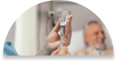
Круглосуточный надзор
В стационаре пациенты находятся под пристальным наблюдением специалистов.
Участие психолога
Пациенты всегда могут обратиться за психологической помощью.
Изоляция
Пациенты не могут вступить в контакт с другими зависимыми, старыми знакомыми.
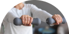
Спортивные занятия
Физкультура, игры, ЛФК, физиотерапия и другие полезные занятия.
Планирование дня
Зависимые соблюдают определенный распорядок дня.
Комфортные палаты
Просторные, светлые и чистые палаты для наших пациентов.


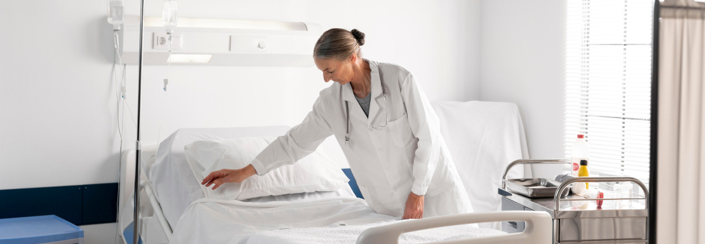
Вывод из запоя в стационаре — самый безопасный способ нормализации работы организма после продолжительного употребления спиртного. После проведения диагностики для стабилизации состояния больного, как правило, используется инфузионная терапия (она направлена на нормализацию водно-солевого баланса и выведение метаболитов этанола), сильнодействующие седативные препараты и общеукрепляющие средства.
Выбор тактики медикаментозной терапии напрямую зависит от состояния больного. К примеру, при развитии депрессивной симптоматики используются транквилизаторы и антидепрессанты. Дополнительно проводится профилактика наиболее распространенных осложнений длительных запоев, связанных с поражением паренхимы печени, поджелудочной железы, почек, нервной и сердечно-сосудистой систем.
Только врач может оценить состояние пациента, дать рекомендации во время выписки, которые помогут предотвратить повторный запой, развитие соматических осложнений или нарушений в работе психики алкоголика. Главным достоинством лечения в стационаре является проведение динамического наблюдения за состоянием больного и своевременное реагирование на изменения в его самочувствии.
После нормализации общего физического состояния человека, страдающего от алкогольной зависимости, специалисты клиники могут провести курс кодирования, включающий медицинские процедуры и психологическую помощь. Важно понимать, что вывод из запоя — мероприятие, помогающее лишь улучшить самочувствие пациента. Поэтому в дальнейшем нужно бороться с пагубной тягой к спиртному. Стоимость курса терапии определяется тяжестью состояния пациента, наличием сопутствующих заболеваний и продолжительностью восстановления. Полноценное лечение, проводящееся в несколько этапов, значительно повышает вероятность прогресса в лечении алкоголизма в Уфе и области.
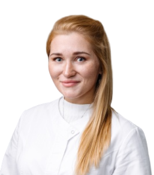
Карлова Ирина Олеговна
Должность: Психиатр-нарколог
Стаж: 6 лет
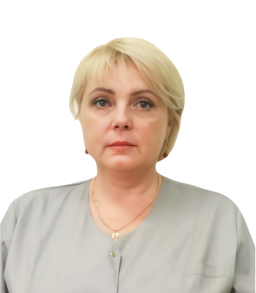
Карлова Ирина Олеговна
Должность: Психиатр-нарколог
Стаж: 6 лет
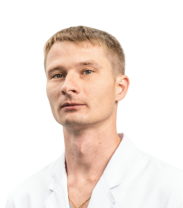
Карлова Ирина Олеговна
Должность: Психиатр-нарколог
Стаж: 6 лет
Карлова Ирина Олеговна
Должность: Психиатр-нарколог
Стаж: 6 лет
Карлова Ирина Олеговна
Должность: Психиатр-нарколог
Стаж: 6 лет
Вывод из запоя — это сложный и ответственный процесс, который требует квалифицированного подхода. Профессиональная помощь нарколога играет ключевую роль в успешном выводе из состояния алкогольного опьянения. Преимущества профессиональной помощи:
Кроме того, нарколог, осуществляя домашний вывод из запоя, берет с собой необходимые медикаменты и оборудование для проведения процедур. Он предусматривает индивидуальный курс лечения, включая:
После успешного вывода из запоя важно принимать меры для предотвращения рецидивов и поддержания здоровья. Ключевые аспекты в этом процессе:
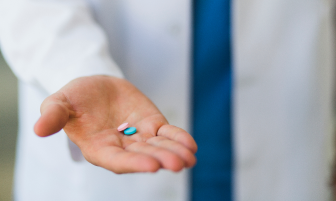
Скидка 1000 р.
На услугу вывода из запоя на дому при заказе с сайта
3 300руб.2 300руб.
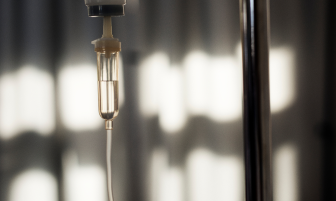
Скидка 1000 р.
На услугу вывода из запоя на дому при заказе с сайта
3 300руб.2 300руб.
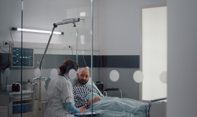
Скидка 1000 р.
На услугу вывода из запоя на дому при заказе с сайта
3 300руб.2 300руб.
Скидка 1000 р.
На услугу вывода из запоя на дому при заказе с сайта
3 300руб.2 300руб.
Скидка 1000 р.
На услугу вывода из запоя на дому при заказе с сайта
3 300руб.2 300руб.
Скидка 1000 р.
На услугу вывода из запоя на дому при заказе с сайта
3 300руб.2 300руб.
{kind=link}
{kind=link}
{kind=link}